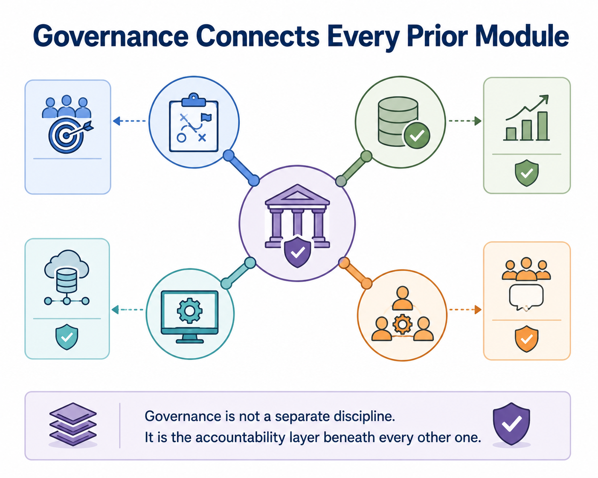
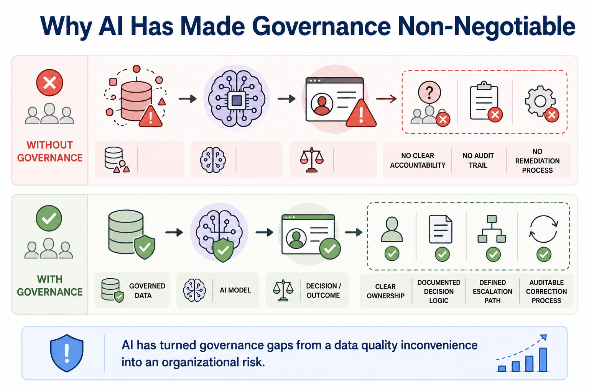
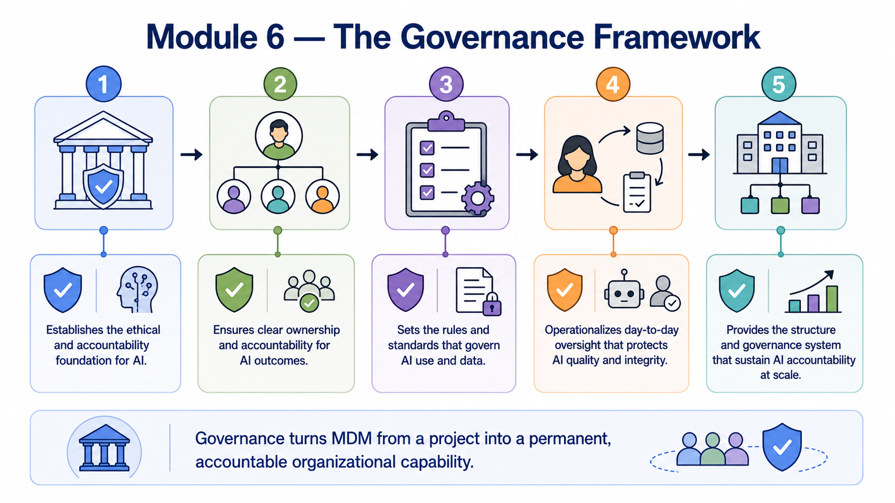

Data Governance Frameworks
Module support notes
Why Governance Is the Capstone Discipline
Governance is positioned deliberately as the discipline that follows strategy, data quality, and technology, because it is the layer that makes each of them durable. Strategy defines what the organization wants to achieve. Data quality assessment reveals where the data stands today. Technology provides the capability to fix and maintain it.
Governance is what ensures those decisions remain accountable, consistent, and enforced after the initial program excitement fades — through policy, defined roles, and operating structures that do not depend on any single person's continued involvement.
Note
Governance is not a separate discipline — it is the accountability layer beneath every other one. It connects to strategy by enforcing the goals the organization defined. It connects to data quality by institutionalizing the standards the assessment established. It connects to technology by defining the policies the platform enforces. And it connects to stakeholder alignment by creating the structures that keep that alignment intact over time.

Governance as an AI Accountability Requirement
As AI systems increasingly make or influence consequential decisions — credit approvals, hiring recommendations, pricing, fraud flags — the absence of clear data governance becomes an organizational risk rather than an operational inconvenience. Regulators, customers, and internal risk functions increasingly expect organizations to demonstrate who is accountable for the data feeding an AI system, what standards that data was held to, and how problems are identified and corrected.
Governance frameworks are what make this demonstrable. Without them, ungoverned data feeding an AI model produces a situation where a biased or incorrect decision has no clear accountability, no audit trail, and no defined remediation process. With governance in place, every AI data input has an owner, documented decision logic, a defined escalation path, and an auditable correction process.
Warning
AI has turned governance gaps from a data quality inconvenience into an organizational risk. An MDM program without a governance framework can still produce golden records — but it cannot demonstrate who is accountable for them, what standards they were held to, or how errors in them will be corrected. That gap is increasingly unacceptable to regulators, auditors, and risk functions as AI systems become more consequential.

Module 6 covers governance as a five-stage framework — each stage building the accountability infrastructure that turns MDM from a project into a permanent organizational capability.
